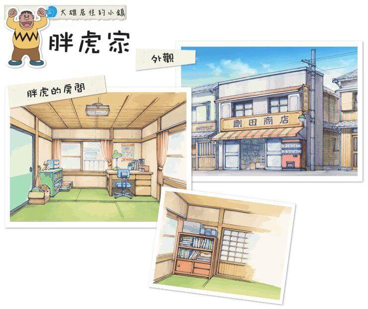
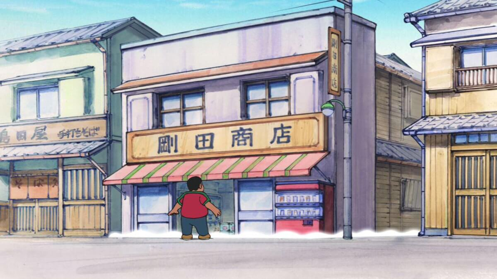
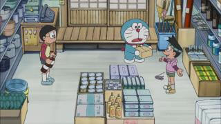

胖虎家 |
|  |
概述胖虎家的辨識度很高，因為正門就寫著一個大大的「剛田商店」字樣。院子 |
 房屋外觀 |
剛田商店在馬路旁邊，門口擺著許多生鮮雜貨，旁邊還有個自動販賣機。自動販賣機的旁邊是條窄巷，可通往胖虎木製的家。也有院子，但比較少出場。左側則是一間名喚「島田屋」的手製蕎麥麵店。 剛田商店 |
 剛田商店 |
剛田商店在住宅前面，算是比較傳統的雜貨店，商品種類五花八門，從水果、飲料、面紙、清潔用品、鍋具、掃把等應有盡有。有時候胖虎還得騎腳踏車幫忙送貨。靠住宅的一側有電話機。 |